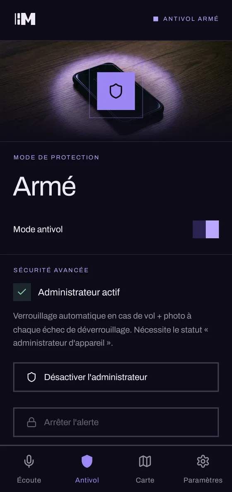

Antivol
Alarme antivol pour téléphone Android
Au café, à la bibliothèque, dans le train : vous posez votre téléphone une minute. Avec l'antivol HearMe armé, si quelqu'un le prend ou le bouge, une alarme se déclenche aussitôt.
Télécharger HearMe gratuitement Ouvrir le panneau gethearme.me
Comment ça marche
- 01
Armez l'antivol
Un appui dans l'application. Une notification indique que la protection est active.
- 02
Quelqu'un prend le téléphone
HearMe détecte le mouvement et une alarme forte se déclenche.
- 03
Vous êtes prévenu
Alerte sur Telegram (et par e-mail si vous l'activez), avec la position du téléphone.
Ce que fait HearMe
- Pour arrêter l'alarme, il faut déverrouiller le téléphone : un voleur ne peut pas la couper.
- Photo de la personne à chaque déverrouillage raté, envoyée sur votre Telegram et dans votre panneau.
- Verrouillage automatique en cas de vol (avec l'autorisation administrateur d'appareil).
- Alertes quand la batterie est presque vide ou quand le téléphone s'éteint.
Questions fréquentes
Est-ce que l'alarme sonne si je bouge moi-même le téléphone ?
Oui si l'antivol est armé. Pensez à le désarmer avant de reprendre votre téléphone, ou déverrouillez-le pour couper l'alarme.
Mes proches peuvent-ils être prévenus ?
Oui. Vous pouvez relier jusqu'à 2 proches sur Telegram : ils reçoivent les alertes, les photos et la position.
L'antivol est-il gratuit ?
Oui, l'alarme antivol fait partie de l'application gratuite.